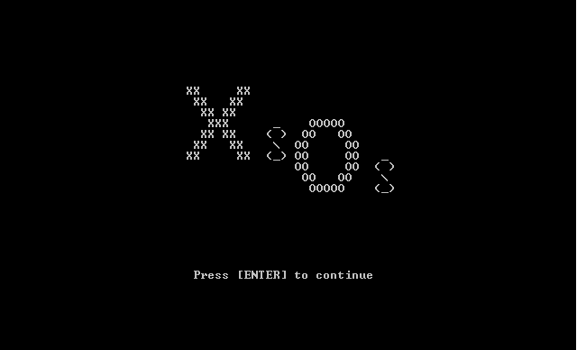
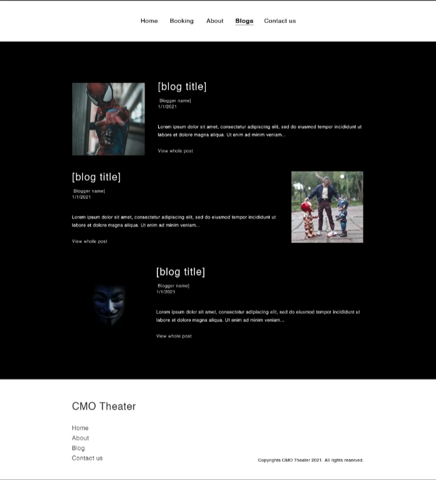
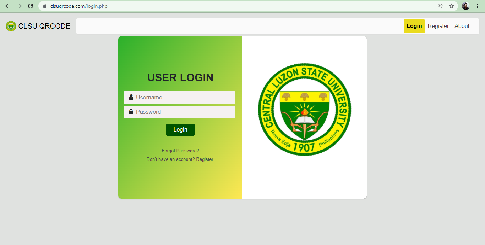

PROJECTS |
DESCRIPTION |
|---|---|
Guessing GameGuessing Game is a assembly language program developed by Xylene Macalla and John Renz Oatis(Me). This game ask you two different numbers and then process it. After that the game will ask you 3 times to guess a number between the 2 numbers you have given. You win if you guess it within 3 times, you lose if you could not guess it at all. Image cannot be found |
|
 |
Inasal Ordering SystemInasal Ordering System is a c language program developed by Armando Fronda and John Renz Oatis(Me). We created this system as ordering system from a fast food restaurant, Mang Inasal. This system will ask you your order according to the menu's same as the menu on the real Mang Inasal. After that you will be ask to input your payment and if your money is sufficient according to your order the transaction will be proceed and give you your ticket, but if not then the transaction will be terminated. You can also view the transaction history. Image cannot be found |
|  |
X's and O's (Tic-Tac-Toe)X's and O's game is a python developed by Aaron Cacho, Cameron Cajucom, Ysabelle Ann Mateo and John Renz Oatis(Me). This game is just like the normal game of tic-tac-toe. Two players are needed and contains 3 rounds. Player 1 and 2 will input their names then the system will randomly choose who will be first to play. Within 3 rounds players need to win, its either 3-0, 2-1, or a draw. The game also contains intructions and game history that can be cleared if you want to. |
|  |
CMO TheatersCMO Theaters is a website developed by Cameron Cajucom, Ysabelle Ann Mateo and John Renz Oatis(Me). This online website is a movie booking system that lets user to book their movie tickets and foods in a cinema thru online. When a transaction is complete, the full information will be send to the users email address. This website also contains current or latest movies in the cinema and blogs regarding the movies. Users can also send complaints or questions to us thru the website. This website also have a admin side where the administrator can customize, or add movies and blogs to the site. Link: CMO Theaters |
|  |
CLSU QRCODE Entry Information SystemCLSU QRCODE Employee and Visitors Entry Information System is a web app and android application developed by Aaron Cacho, James Philip and John Renz Oatis(Me). This project serves as our capstone project. This project as its name has the purpose of getting the personal information and health declaration as contact-tracing and save it to QR code. This QR Code will be scanned by the administrator in the Entrance of CLSU to record their information easily and also to be able to monitor who and where the user goes inside the campus. This systen helps frontline workers get users information easily before entering the campus. This reduce long queues in the frot gate that violates social distancing protocol. Also this system contains guide map of CLSU and visual of the establishment for newcomers, for them to easily navigate the CLSU. Link: CLSU QR CODE |